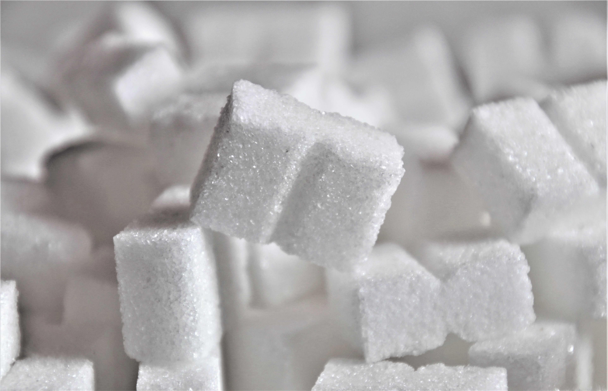

Sugar is composed of carbon, hydrogen, and oxygen atoms. Sugar can be found in almost all the processed food, including food that are advertised as healthy.
There are more than 60 different names sugar. Some common examples are sucrose, high-frutose corn syrup, fructose, maltose.
Since becoming a mother, I have started reading food labels and ingredients lists more carefully so I can reduce the amount of sugar in my family's diet.
Food manufacturers often use different names for sugar on labels and use words like "fruit juice" or "natural sugar" to make products seems healthier than they really are.
I believe that sugar is still sugar weather it comes from sugar cane or fruits, because the body processes it in a similar way.
I try my best to limit the amount of processed sugar in my daughter's diet and avoid products that contain added sugar.
| Sugar name | Type |
|---|---|
| Sucrose | Cane Sugar |
| Lactose | Milk Sugar |
| Glucose | Fruit Sugar |
| High Frutose Corn Syrup | Highly processed sugar |